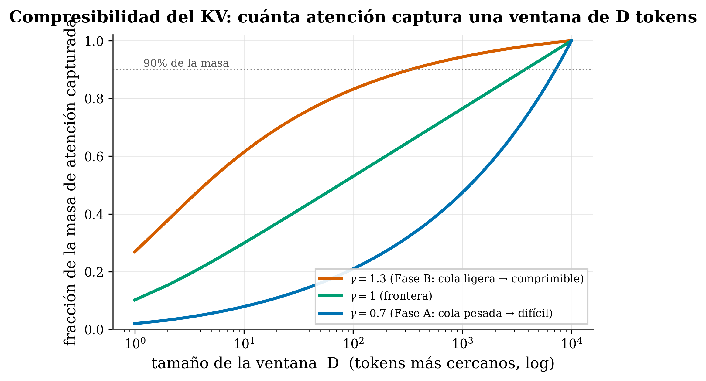

21 KV-cache compression in practice
Where we are. The close of Part II. The KV-cache (Ch. 12) grows without limit and is the bottleneck for long context. Here we see how the field compresses it —and our contribution: a window derived from γ, with no parameters to tune—. And, as always, which part of this is validated and which isn’t.
21.1 The idea in one sentence
How much a model’s KV-cache can be compressed is decided by its exponent γ: with γ>1 (light tail) a finite window captures almost all the attention; with γ<1 (heavy tail) it doesn’t —and that window can be computed in closed form—.
21.2 Key concepts and their role in the transformer
Before we get into the detail, let’s define the terms of this chapter and what each one is for inside a transformer:
- KV-cache. Definition: the memory that stores the keys (K) and values (V) of every past token, per layer and per head, so they aren’t recomputed during generation. In the transformer: it grows O(n) with the context and is the memory bottleneck for long context.
- KV compression. Definition: deciding which K/V to keep and which to discard, merge, or quantize. In the transformer: it lets you serve long contexts without the cache choking the GPU’s memory.
- Decay exponent (γ). Definition: the rate at which attention falls off with distance (
A(d)∝d^−γ). In the transformer: it decides how much attention there is far away and therefore how much of the KV you can throw out without losing mass. - The D_f window (ours). Definition: the number of nearby tokens it’s enough to keep to capture a fraction \((1-\varepsilon)\) of the attention, computed in closed form from γ. In the transformer: a predictive, parameter-free KV budget, derived from a γ measured once.
- Tolerance ε. Definition: the small fraction of attention mass we accept losing when we trim. In the transformer: it’s the knob that sets the size of D_f —smaller ε, larger window—.
- Phase A / Phase B (γ<1 / γ>1). Definition: the two regimes that γ=1 separates; with γ>1 the sum \(\sum d^{-\gamma}\) converges (light tail), with γ<1 it diverges (heavy tail). In the transformer: they mark whether a model is compressible (a finite window is enough) or not (the mass is spread across the whole context).
- Heuristic vs. principled methods. Definition: the former pick the budget by position or observed mass (StreamingLLM, H2O, SnapKV); the latter by a loss bound (Ada-KV, LAVa). In the transformer: it’s the field D_f is compared against; none derives the budget from a decay exponent.
- Mass ≠ fidelity. Definition: capturing the attention mass doesn’t guarantee preserving the output, because a low-mass token can carry weight through the norm of its value. In the transformer: it’s the honest limit of D_f —it reasons about mass, necessary but not sufficient—.
With the vocabulary pinned down, let’s get to the problem and the math of D_f.
21.3 The problem
During generation, the KV-cache stores K and V for every past token × every layer × every head: it grows linearly with the context and, in long context, it’s memory —not compute— that chokes. Compressing = deciding which K/V to keep and which to discard (or merge, or quantize).
21.4 What the field does
| Method | What it keeps | Basis | Ref |
|---|---|---|---|
| StreamingLLM | sinks + recent window | heuristic (position) | (Xiao et al. 2024) |
| H2O | “heavy hitters” + recent | heuristic (observed mass) | (Zhang et al. 2023) |
| Scissorhands | high accumulated attention | heuristic (mass) | (Liu et al. 2023) |
| FastGen | adaptive per-head policy | heuristic + profiling | (Ge et al. 2023) |
| SnapKV | what matters for the end of the prompt | heuristic (prompt attention) | (Li et al. 2024) |
| PyramidKV | more budget in lower layers | heuristic (per-layer scheme) | (Cai et al. 2024) |
| Ada-KV | per-head budget | principled (loss bound) | (Feng et al. 2025) |
| LAVa | head+layer budget | principled (info loss) | (Shen et al. 2025) |
| KIVI | all of them, at 2 bits | quantization (orthogonal axis) | (Liu et al. 2024) |
Look at the “Basis” column: they all pick the budget from position, from observed attention mass, or from a loss bound —none derives it from a decay exponent—.
21.5 Our D_f: the window derived from γ
Here’s the contribution, and the math is pretty and simple. If attention decays like A(d)∝d^−γ, keeping the D nearest tokens captures a fraction of the mass equal to \(\sum_{d=1}^{D} d^{-\gamma}\) divided by the total. What happens as D grows?
- γ > 1 (Phase B, light tail): the sum converges; the tail beyond D shrinks like \(D^{1-\gamma}\). A finite window \(D_f \sim \varepsilon^{-1/(\gamma-1)}\) captures a fraction \((1-\varepsilon)\) of the attention —where ε is the small fraction of mass we accept losing (the tolerance): the smaller ε, the larger the window \(D_f\)— → highly compressible.
- γ = 1: the sum diverges like \(\log D\) → the boundary case.
- γ < 1 (Phase A, heavy tail): it diverges like \(D^{1-\gamma}\) → the mass is spread across all distances; no finite window captures it → hard to compress.

That’s why γ=1 separates two regimes of compressibility (it’s result Q3 of Paper I (Marín 2026)), and the window D_f comes out in closed form from γ itself —measured once, with no parameters to tune—. That’s the difference from the field:
The gap we fill: no method derives the KV budget from a decay exponent. They all use observed mass, heuristics, or bounds. Our novelty isn’t “compressing the KV” (that’s done a lot already), but the mechanism: a predictive, parameter-free budget from a measured γ.
21.6 Honesty — what’s left to validate
- The head-to-head is missing. We need to compare D_f against the principled methods (Ada-KV, LAVa) at matched memory on task benchmarks (RULER, LongBench, NIAH), not just against heuristics. That head-to-head benchmark is pending: we present D_f as derived and predictive, not as proven superior.
- Capturing attention mass ≠ output fidelity. A low-mass token can matter through the norm of its value (Ada-KV’s critique). D_f reasons about mass, which is necessary but not sufficient.
- D_f goes ON TOP of the sink and the recent window, it doesn’t replace them: real attention is γ-tail + sink + recency (Ch. 17). The total budget = sink + local window + D_f.
- Measure the task, not perplexity. Perplexity can stay low while retrieval (needle) has already collapsed —perplexity is dominated by the local tokens you keep anyway—.
- D_f assumes a clean single-exponent tail; it’s weaker on induction/retrieval heads with flat or multimodal attention.
tafagent includes the X-19 recipe (KV compression), which based on your model’s γ recommends soft-decay / cutoff / literature, and computes the KV memory at your target length. It’s D_f turned into practical advice.
21.7 Summary
- The KV-cache grows O(n) → bottleneck; compressing = which K/V to keep.
- The field picks the budget by position/observed mass/bounds (StreamingLLM, H2O, SnapKV, Ada-KV, LAVa…); none derives it from a decay exponent.
- Our D_f: since
A(d)∝d^−γ, a finite window captures \((1-\varepsilon)\) of the mass if γ>1 (compressible), not if γ<1; γ=1 is the boundary and D_f comes out in closed form from γ (no parameters). - Honest: the head-to-head with Ada-KV/LAVa is pending; mass ≠ fidelity; D_f goes on top of sink+recency; measure the task, not perplexity.
End of Part II. You’ve seen our whole territory: reading maps → aliasing → the γ law → the atlas → sinks → taxonomy → long context → KV. Next (Part III): a more speculative but revealing lens — the physics of attention (phases, thermodynamics, fractional transport, grokking).
21.8 Exercises
- Compressibility. Looking at the figure: which model compresses its KV better, one with γ=1.3 or one with γ=0.7? Why?
- The boundary. Why does γ=1 separate “compressible” from “hard”? (Think about whether \(\sum d^{-\gamma}\) converges.)
- Honesty. Why don’t we claim D_f is better than Ada-KV? What experiment would be missing?
- Mass ≠ fidelity. Give a case where a token with little attention is still important for the output.